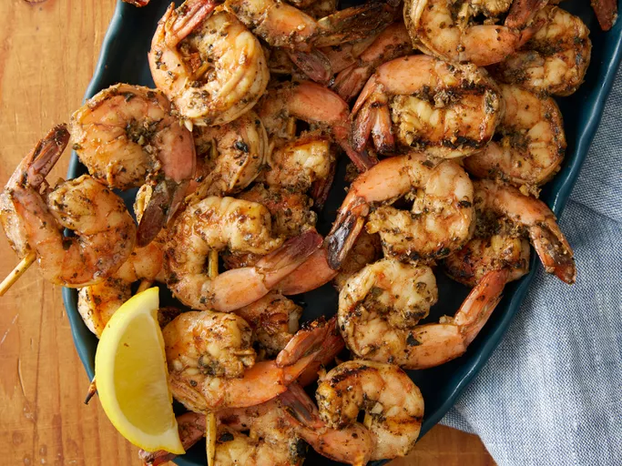

Grilled Garlic and Herb Shrimp

About Grilled Garlic and Herb Shrimp
Zesty, succulent shrimp is simple to make from the comfort of home.
Try this mouthwatering grilled shrimp recipe made with brown sugar,
basil, and a host of Italian seasonings for an irresistible seafood experience.
Ingredients
- 2 teaspoons ground paprika
- 2 tablespoons fresh minced garlic
- 2 teaspoons italian seasoning, or to taste
- 1/4 cup olive oil
- 1/2 teaspoon ground black pepper